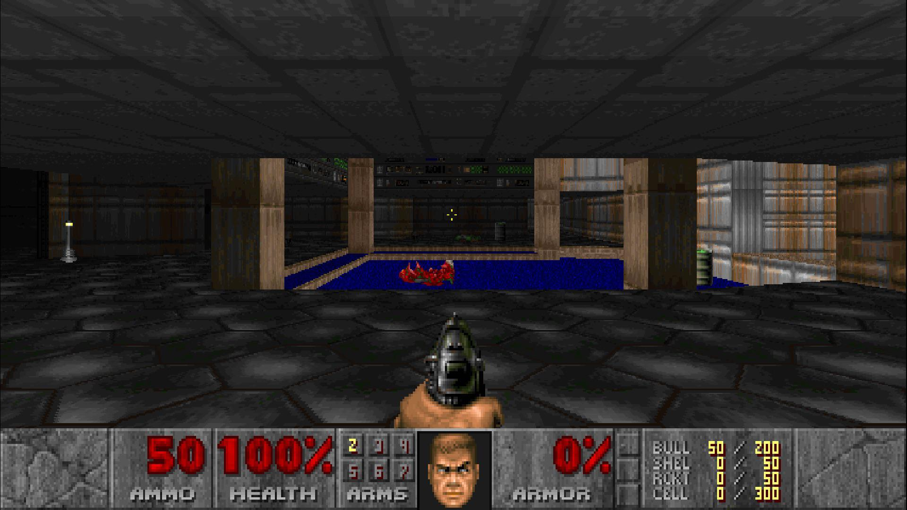

Doom es un videojuego de disparos en primera persona desarrollado por id Software y lanzado por primera vez en 1993. Es considerado uno de los títulos más influyentes en la historia de los videojuegos, ya que popularizó el género de los shooters en primera persona y estableció muchas de las convenciones que aún se utilizan en los juegos modernos.
